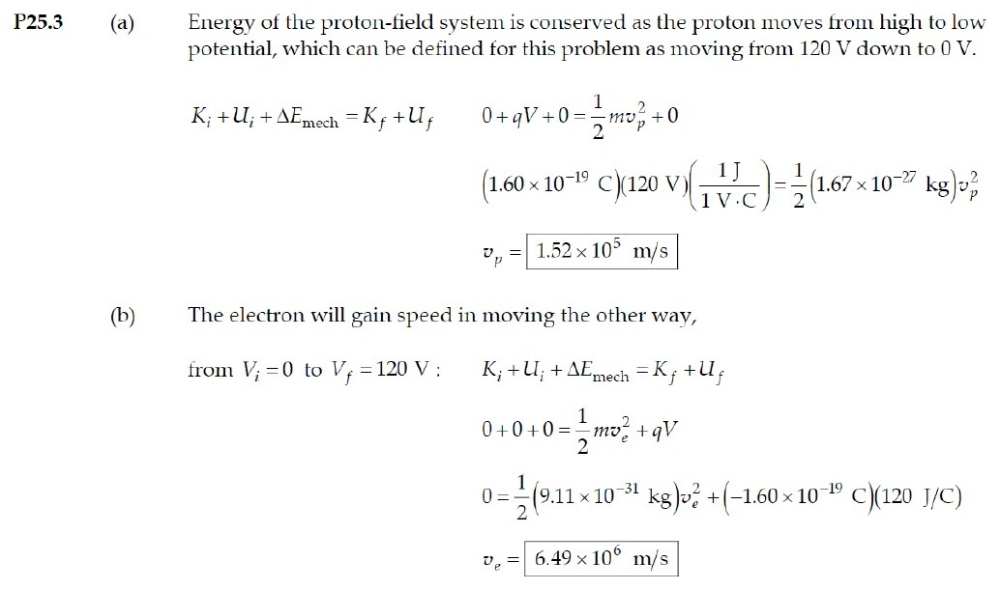

PHYS 210 · CK #2 · SOLUTION KEY
Supplementary Practice 7 Attempt all questions. This supplementary paper covers supporting material and is not a replica of the announced four-topic selection.
Worked explanations are Tesselate study notes. The linked source page also includes the instructor’s or textbook’s original solution where available.
QUESTION 1 · Homework 6 · 23.44
Electric field from a potential Exact question and original solution screenshots ↗
Identify Take the negative gradient, differentiating one coordinate at a time.
Set up E x = − 2 A x y + B y 2 ; E y = − A x 2 + 2 B x y ; E z = 0 E_x=-2Axy+By^2;\ E_y=-Ax^2+2Bxy;\ E_z=0 E x = − 2 A x y + B y 2 ; E y = − A x 2 + 2 B x y ; E z = 0 .
Execute E x = − 8 + 1.28 = − 6.72 ; E y = − 20 + 12.8 = − 7.20 V / m E_x=-8+1.28=-6.72;\ E_y=-20+12.8=-7.20\ \mathrm{V/m} E x = − 8 + 1.28 = − 6.72 ; E y = − 20 + 12.8 = − 7.20 V/m .
∣ E ∣ = 6.72 2 + 7.20 2 = 9.85 V / m |E|=\sqrt{6.72^2+7.20^2}=9.85\ \mathrm{V/m} ∣ E ∣ = 6.7 2 2 + 7.2 0 2 = 9.85 V/m ; angle
= 226.97 ∘ =226.97^\circ = 226.9 7 ∘ from +x.
Evaluate Both components are negative, so the vector is in quadrant III, not quadrant I.
E = (−6.72 i − 7.20 j) V/m; 9.85 V/m at 227°.
QUESTION 2 · Homework 6 · 23.55
Nonuniform field in a diode Exact question and original solution screenshots ↗
Identify Differentiate V rather than assuming a uniform 240/d field.
Set up C = 240 / d 4 / 3 ; E x = − d V / d x = − 4 3 C x 1 / 3 ; F x = − e E x C=240/d^{4/3};\ E_x=-dV/dx=-\tfrac43Cx^{1/3};\ F_x=-eE_x C = 240/ d 4/3 ; E x = − d V / d x = − 3 4 C x 1/3 ; F x = − e E x .
Execute C = 7.85 × 10 4 V / m 4 / 3 ; E x = − ( 1.047 × 10 5 ) x 1 / 3 V / m C=7.85\times10^4\ \mathrm{V/m^{4/3}};\ E_x=-(1.047\times10^5)x^{1/3}\ \mathrm{V/m} C = 7.85 × 1 0 4 V/ m 4/3 ; E x = − ( 1.047 × 1 0 5 ) x 1/3 V/m (x in metres). At 0.00650 m,
E x = − 1.954 × 10 4 V / m E_x=-1.954\times10^4\ \mathrm{V/m} E x = − 1.954 × 1 0 4 V/m and
F x = + 3.13 × 10 − 15 N F_x=+3.13\times10^{-15}\ \mathrm N F x = + 3.13 × 1 0 − 15 N .
Evaluate Field points toward the cathode; the negative electron feels force toward the anode.
C = 7.85 × 10⁴ V/m^(4/3); midpoint force +3.13 × 10⁻¹⁵ N.
QUESTION 3 · Homework 7 · 24.12
Cylindrical capacitor Exact question and original solution screenshots ↗
Identify Integrate the radial field between coaxial conductors.
Set up V = λ ln ( b / a ) / ( 2 π ε 0 ) ; C / L = 2 π ε 0 / ln ( b / a ) ; Q = ( C / L ) L V V=\lambda\ln(b/a)/(2\pi\varepsilon_0);\ C/L=2\pi\varepsilon_0/\ln(b/a);\ Q=(C/L)LV V = λ ln ( b / a ) / ( 2 π ε 0 ) ; C / L = 2 π ε 0 / ln ( b / a ) ; Q = ( C / L ) L V .
Execute C / L = 1.20 × 10 − 10 F / m ; Q = 1.17 × 10 − 10 C C/L=1.20\times10^{-10}\ \mathrm{F/m};\ Q=1.17\times10^{-10}\ \mathrm C C / L = 1.20 × 1 0 − 10 F/m ; Q = 1.17 × 1 0 − 10 C .
Evaluate The inner conductor is positive and the outer negative; use the inner surface radius of the outer cylinder.
120 pF/m; inner +117 pC, outer −117 pC.
QUESTION 4 · Tutorial 5 · 3
Accelerating a proton and an electron Exact question and original solution screenshots ↗
Convert electrical energy to kinetic energy Acceleration increases kinetic energy by the charge magnitude times the potential-difference magnitude. The proton moves toward lower potential; the electron moves toward higher potential.
1 2 m v 2 = e ∣ Δ V ∣ , v = 2 e ( 120 ) m \tfrac12 mv^2=e|\Delta V|,\qquad v=\sqrt{\frac{2e(120)}m} 2 1 m v 2 = e ∣Δ V ∣ , v = m 2 e ( 120 ) Insert each particle mass Use e = 1.602 × 10⁻¹⁹ C, proton mass 1.673 × 10⁻²⁷ kg and electron mass 9.109 × 10⁻³¹ kg.
v p = 1.5162 × 10 5 m / s , v e = 6.4971 × 10 6 m / s v_p=1.5162\times10^5\ \mathrm{m/s},\qquad v_e=6.4971\times10^6\ \mathrm{m/s} v p = 1.5162 × 1 0 5 m/s , v e = 6.4971 × 1 0 6 m/s (a) 1.52 × 10 5 m / s ; (b) 6.50 × 10 6 m / s \text{(a) }1.52\times10^5\ \mathrm{m/s};\qquad\text{(b) }6.50\times10^6\ \mathrm{m/s} (a) 1.52 × 1 0 5 m/s ; (b) 6.50 × 1 0 6 m/s Both particles gain 120 eV. The lighter electron is faster by √(mp/me) ≈ 42.8; both speeds are nonrelativistic.
Instructor’s posted D2L solution 
D2L source · page 1 ↗